Chapter 1: Trust Foundations¶
Before learning chips, TPMs and certificate authorities, you need the core ideas they all share: what trust means, what roots and chains of trust are, the bits of cryptography that make them work and the threats they defend against. This chapter gives you those foundations and a map of how hardware roots of trust, TPMs, boot security, trusted execution and PKI fit together — each later chapter fills in one part of the map.
1.1 What "Trust" Means in Computing¶
In security, to trust a component means you rely on it to behave correctly — if it misbehaves, your protection fails and you may not even notice. "Trusted" describes that dependence; "trustworthy" means there is good evidence the component deserves it. Good security design keeps the list of trusted things short and works hard to make each one trustworthy.
Think of it like…
Giving a neighbour your spare house key makes them trusted whether or not they are honest — if they misuse it, you are burgled. You would pick someone with a track record (trustworthy) and hand over only the front-door key, not the safe combination.
Real-world example
Maya, the new IT lead at the fictional Harbour Credit Union, lists everything a member's online-banking login silently depends on: the laptop's firmware, the operating system, the browser, the root certificates inside it, DNS and the bank's TLS server key. She notices that tampered firmware could quietly undermine every other item on the list. That insight drives her next purchase: laptops with a hardware root of trust, measured boot and a TPM, so the bottom of the stack can be checked rather than just assumed.
How it works¶
- Name the asset you are protecting (money, patient records, a signing key).
- List every component that could break that protection if it misbehaved — these are your trust dependencies.
- Draw trust boundaries where data or control passes between parts you trust differently.
- Remove or shrink dependencies you do not need, so less has to be trusted.
- Gather evidence for what remains: certification, audits, open review, signatures and attestation.
- Re-check over time — keys leak, vendors change and bugs are found, so trust decays.
Who uses it
Security architects, threat modellers, platform and PKI engineers, auditors and anyone who writes a security design document starts from this list of trust assumptions.
Key takeaway
Memorise the classic definition: a trusted component is one whose failure can break your security — so 'trusted' is a warning label, not a compliment.
Going deeper
- A useful exercise is the 'trust inventory': for one asset, list every hardware, firmware, software, person and organisation that could defeat its protection. Most inventories reveal dozens of entries nobody consciously chose.
- Trust is directional and scoped: a CA trusted to vouch for web servers is not automatically trusted to sign code. Certificates express this with Extended Key Usage, and roots of trust with separate keys per purpose.
- Evidence for trustworthiness comes in several forms — formal verification (e.g. the seL4 microkernel), independent certification (Common Criteria, FIPS 140-3), transparency (open source, Certificate Transparency logs) and runtime evidence (attestation).
- Trust has a time dimension: keys expire, algorithms weaken (SHA-1, RSA-1024), and vendors stop patching. Good designs plan for rotating keys, revoking certificates and updating trusted code.
- Insiders and suppliers are trust dependencies too. Supply-chain security frameworks such as NIST SP 800-161 and SLSA treat the people and build systems that produce code as part of what you trust.
- Reducing trust is often cheaper than proving trustworthiness: removing an unneeded admin account or driver eliminates a dependency, whereas evaluating it can take months.
Common mistakes & misconceptions
- Treating 'trusted' as meaning 'safe'. It only means 'relied upon'; a trusted component that is compromised is the worst kind of failure.
- Listing only software in a trust inventory. Firmware, hardware, manufacturers, administrators and certificate authorities belong on the list too.
- Assuming trust once granted stays valid forever. Revisit trust decisions when keys leak, vendors change or new attacks appear.
Try it: Count how many root certificate authorities your machine already trusts¶
# Windows PowerShell
(Get-ChildItem Cert:\LocalMachine\Root).Count
# Linux (Debian/Ubuntu)
ls /etc/ssl/certs/*.pem | wc -l
# macOS
security find-certificate -a /System/Library/Keychains/SystemRootCertificates.keychain | grep -c labl
Key chips, standards, protocols, products & terms¶
| Name | What it does | Example |
|---|---|---|
| Trust General security engineering · Concept · General |
Relying on a component to behave as expected, accepting that its failure or betrayal would break your security goals. | A web browser trusts about 150 root CAs; any one of them could issue a certificate the browser would accept. |
| Trusted vs trustworthy Security engineering literature · Concept · General |
Trusted means you depend on it; trustworthy means evidence shows it deserves that dependence. Aim for components that are both. | An unvetted USB driver running in the kernel is trusted (it can do anything) but not shown to be trustworthy. |
| Trust boundary Threat modelling (e.g. Microsoft STRIDE) · Concept · General |
A line in a design where data or control crosses between parts trusted to different degrees; checks belong there. | Data entering a TPM from the operating system crosses a trust boundary, so the TPM validates every command. |
| Trust assumption Security design practice · Concept · General |
Something a design takes for granted without proof, such as 'the boot ROM has no bugs' or 'the CA checked identity'. | A secure-boot design assumes the vendor's signing key never leaks; the 2023 MSI key leak broke exactly that assumption. |
| Threat model OWASP, Microsoft STRIDE, MITRE ATT&CK · Concept · General |
A structured description of what you protect, from whom, how attackers could act and which risks you accept. | Harbour Credit Union's laptop threat model includes theft in taxis but excludes nation-state chip decapping. |
| Trust anchor RFC 5280, RFC 5914 · Concept · General |
A key or certificate accepted directly, without further proof, at the top of a verification chain. | A browser's root store and a CPU's fused public-key hash are both trust anchors for different chains. |
| Transitive trust TCG architecture · Concept · General |
Trusting B because trusted A vouched for it — the basis of boot chains and certificate chains, and weaker with every hop. | Firmware trusts the bootloader because its signature verifies; the bootloader then vouches for the kernel. |
| Least privilege Saltzer & Schroeder design principles (1975) · Concept · General |
Give each component only the access it needs, so a trusted part that fails can do limited damage. | A firmware-update service can write the flash region but cannot read the disk-encryption key. |
| Defence in depth Security architecture practice · Concept · General |
Layering independent protections so one broken layer does not lose everything. | Secure boot blocks unsigned bootloaders; measured boot plus attestation catches anything that slips past. |
| Assurance ISO/IEC 15408 Common Criteria, FIPS 140-3 · Concept · General |
The level of confidence, gained through evaluation, testing and review, that a component really meets its security claims. | A smart-card chip evaluated at EAL6+ offers more assurance than an unevaluated microcontroller. |
| Zero trust NIST SP 800-207 (2020) · Concept · Current · General |
An architecture that never trusts by network location; every request is authenticated and checked against device and user state. | Before opening the payroll app, the gateway checks Maya's identity plus her laptop's attested health. |
| Relying party RFC 5280, IETF RATS RFC 9334 · Role · General |
Whoever depends on a certificate or attestation result to make a decision, and therefore bears the risk if it is wrong. | The bank's login server is the relying party when it checks a laptop's device certificate. |
1.2 The Trusted Computing Base (TCB)¶
The trusted computing base is the complete set of hardware, firmware and software that must work correctly for a system's security rules to hold. Anything outside the TCB can misbehave without breaking those rules; anything inside it cannot. Security engineers try to keep the TCB as small and simple as possible, because every extra line of trusted code is another place for a fatal bug.
Big TCB vs small TCB for one secret key
| Key in an ordinary app | Key inside a secure element | |
|---|---|---|
| Trusted code size | Tens of millions of lines | Thousands of lines |
| Who can read the key | Kernel, drivers, admins, malware | Only the chip's own firmware |
| Attack surface | Hundreds of system calls, drivers | A small command set |
| Evidence of quality | Usually none independent | Certified (e.g. CC EAL5+) |
| Cost and flexibility | Free, flexible | Extra chip, limited features |
Moving a key into a dedicated security chip removes millions of lines from what must be trusted.
Think of it like…
In a bank, the TCB is the vault door, the guards and the alarm system — not the carpets or the coffee machine. If the coffee machine breaks, the money is still safe; if the vault door fails, it is not.
Real-world example
Leon, a student at the fictional Ridgeway Polytechnic, compares two designs for a password manager. In design A the decryption key lives in an ordinary process, so the whole operating system kernel, every driver and the app itself are in the TCB — tens of millions of lines of code. In design B the key never leaves a secure element that runs a few thousand lines of evaluated code. Design B's TCB for the key is thousands of times smaller, so there is far less that can go wrong.
How it works¶
- Pick the security property you care about, such as 'only Ana can read this file'.
- Trace every component that enforces or could bypass that property — kernel, firmware, hypervisor, CPU microcode, security chip.
- Everything on that trace is in the TCB; everything else is untrusted and must be checked at the boundary.
- Shrink the TCB by moving secrets into smaller isolated components (TPM, secure element, enclave).
- Harden and verify what remains: code review, formal methods, certification, measured and signed updates.
Who uses it
Operating-system and hypervisor designers, platform security engineers, evaluators writing Common Criteria security targets and confidential-computing architects all reason in TCB terms.
Key takeaway
In interviews, describe the TCB as 'the parts that must be correct for security to hold' and explain why smaller is better — fewer lines, fewer bugs, easier to verify.
Going deeper
- The TCSEC (Orange Book) defined the TCB in the early 1980s and graded systems D, C1, C2, B1, B2, B3 and A1; Common Criteria (ISO/IEC 15408) replaced it internationally from 1999 with EAL1-EAL7.
- A reference monitor's three classic properties — complete mediation, tamper-proofness and verifiability — still guide TPM, hypervisor and enclave design today.
- Modern TCBs include things people forget: CPU microcode, the management engine, BMC firmware in servers, peripheral firmware with DMA access and the compilers that built trusted code.
- Confidential computing explicitly shrinks the TCB by removing the hypervisor and host OS; the remaining TCB is the CPU, its security firmware and the guest itself — which is why CPU firmware bugs matter so much there.
- TCB size is measured loosely in lines of code: seL4's verified kernel is around 10,000 lines of C, compared with tens of millions for a general-purpose OS kernel plus drivers.
- TCB recovery is a related idea: after a vulnerability in trusted firmware is fixed, a platform must prove (for example via a new security version in attestation) that it now runs the patched TCB.
Common mistakes & misconceptions
- Thinking the TCB is just the security software you installed. It includes the kernel, firmware, hardware and anything with DMA or privileged access.
- Adding features to trusted components for convenience. Every feature in the TCB enlarges what must be correct; push non-essential code outside it.
- Assuming a small TCB is automatically secure. Small helps, but it still needs review, testing, patching and protection from physical attack.
Try it: See how big part of your own TCB is — count loaded kernel modules and drivers¶
# Linux: every loaded module runs with full kernel privilege
lsmod | wc -l
# Windows PowerShell: running kernel drivers
(Get-CimInstance Win32_SystemDriver | Where-Object State -eq 'Running').Count
Key chips, standards, protocols, products & terms¶
| Name | What it does | Example |
|---|---|---|
| Trusted computing base (TCB) US DoD TCSEC 'Orange Book' (DoD 5200.28-STD, 1985) · Concept · General |
All hardware, firmware and software whose correct behaviour is required to enforce a system's security policy. | For BitLocker, the TCB includes the TPM, UEFI firmware, Windows Boot Manager and the Windows kernel. |
| Orange Book (TCSEC) US Department of Defense, 1983/1985 · Standard · Legacy · General |
The early US evaluation criteria that defined the TCB and rated systems from D to A1; replaced by Common Criteria. | 1980s secure operating systems were sold as 'B2' or 'A1' rated under the Orange Book. |
| Reference monitor Anderson Report, US Air Force (1972) · Concept · General |
A component that checks every access; it must be always invoked, tamper-proof and small enough to verify. | An operating system's access-control check on every file open is meant to behave as a reference monitor. |
| Attack surface Security engineering practice · Concept · General |
All the interfaces an attacker can reach — commands, ports, files, buses — that lead into trusted code. | A TPM's attack surface is its command interface; a full OS kernel exposes hundreds of system calls. |
| Privilege levels (rings) x86 rings 0-3, Arm exception levels EL0-EL3 · Concept · Platform & OS |
Hardware-enforced levels that stop less-privileged code from touching more-privileged code and data. | Apps run at EL0, the Linux kernel at EL1, a hypervisor at EL2 and secure monitor firmware at EL3 on Arm. |
| Microkernel Designs such as seL4, QNX, MINIX 3 · Concept · Platform & OS |
A kernel that keeps only essentials in privileged mode and runs drivers outside it, shrinking the TCB. | A medical-device maker picks a microkernel so a buggy USB driver cannot crash the insulin-dosing logic. |
| seL4 seL4 Foundation (Linux Foundation) · Software · Current · Platform & OS |
A microkernel with machine-checked mathematical proof that its C code matches its specification — a rare, fully verified TCB component. | Defence and aviation projects choose seL4 when they need strong evidence the kernel cannot be subverted. |
| Isolation Hardware MMU, IOMMU, TrustZone, enclaves · Concept · General |
Keeping components in separate protected compartments so one cannot read or change another's memory. | A TPM, a secure enclave and a confidential VM each isolate secrets from the main operating system. |
| Separation of privilege Saltzer & Schroeder (1975) · Concept · General |
Requiring two independent conditions or parties for a sensitive action, so one failure is not enough. | Unsealing a disk key needs both correct boot measurements and the user's PIN. |
| Formal verification Proof assistants such as Isabelle/HOL, Coq/Rocq · Concept · General |
Mathematically proving code or hardware meets a specification, giving the strongest evidence for a small TCB. | Parts of the OpenTitan and Caliptra projects use formal property checking to verify security-critical hardware blocks. |
| Security target ISO/IEC 15408 Common Criteria · Concept · General |
A document defining exactly what a product's TCB (the 'TOE security functionality') protects, against which threats, for evaluation. | A smart-card vendor's security target lists the threats its chip resists, such as fault injection. |
| Confidential computing TCB Confidential Computing Consortium (Linux Foundation) · Concept · Current · Trusted execution |
In confidential VMs and enclaves, the cloud host is removed from the TCB, leaving the CPU and a little firmware. | A hospital's analytics VM no longer has to trust the cloud provider's hypervisor administrators. |
1.3 Threats That Roots of Trust Defend Against¶
Roots of trust exist because some attacks hide below the operating system or happen before it starts, where antivirus cannot see them. Typical threats are malicious firmware (rootkits and bootkits), tampering in the supply chain, someone with brief physical access (the 'evil maid'), stolen laptops and disks, devices pretending to be something they are not, and attackers rolling software back to an old, buggy version.
Threat versus the defence that counters it
| Threat | Main hardware-rooted defence | |
|---|---|---|
| Firmware rootkit | Persists in flash | Silicon RoT verifies firmware |
| Bootkit | Replaces bootloader | UEFI Secure Boot |
| Evil maid | Brief physical access | Measured boot + TPM PIN |
| Stolen disk | Offline reading | TPM-sealed encryption |
| Impersonation | Fake device or server | Hardware-bound keys + PKI |
| Rollback | Old signed firmware | Anti-rollback counters |
| Supply chain | Factory or transit change | Attestation vs reference values |
Each defence relies on something trusted that runs before, or beneath, the attacker.
Think of it like…
Antivirus is a security guard inside the building; firmware attacks are like someone who rewired the building before the guard arrived. You need a check that runs first, from something the attacker could not rewire.
Real-world example
Tomás, a journalist working for the fictional Lantern News, leaves his laptop in a hotel room. An intruder could boot it from USB, copy the disk or flash modified firmware that logs his password. Full-disk encryption sealed to the TPM defeats the disk copy; secure boot stops the USB bootkit; measured boot plus attestation would let Lantern's IT team notice changed firmware. Each defence relies on something trusted that runs before the attacker's code.
How it works¶
- Attackers aim for persistence and stealth: code that survives OS reinstall and runs before security tools.
- Firmware, bootloaders and peripheral controllers are attractive because they start first and are rarely inspected.
- Physical access enables disk theft, booting other media, flashing chips or sniffing buses.
- Supply-chain attacks insert changes before the device reaches you — at the factory, distributor or update server.
- Roots of trust counter these by verifying code before it runs, recording what ran, and protecting keys in hardware.
Who uses it
Threat-intelligence analysts, firmware security researchers, endpoint-security teams and procurement officers buying hardware for high-risk staff all reason about these threats.
Key takeaway
Remember the pairing: secure boot mainly stops bootkits, measured boot plus attestation detects tampering, TPM-sealed encryption protects stolen disks, and hardware identity stops impersonation.
Going deeper
- MITRE ATT&CK lists pre-OS persistence under techniques such as T1542 (Pre-OS Boot) with sub-techniques for system firmware, component firmware and bootkits — useful vocabulary for threat reports.
- Firmware threats are attractive because the code runs with the highest privilege, before endpoint tools load, and is rarely scanned; NIST SP 800-193 therefore asks platforms to protect, detect and recover firmware.
- Physical-access threats come in tiers: minutes (evil maid, booting USB), hours (opening the case, flashing SPI chips, sniffing the TPM bus) and lab-grade (decapping, fault injection). Defences are chosen per tier.
- Supply-chain defences combine signed firmware, manufacturer device certificates, platform certificates (TCG) that describe the as-built configuration, and attestation compared against reference values.
- Rollback attacks are subtle because the old image is genuinely signed; only a monotonic security version stored in fuses, a TPM NV counter or replay-protected memory can refuse it.
- Leaked signing keys turn verification against you: firmware or bootloaders signed with a leaked key pass every check until the key is revoked in fuses, dbx or a certificate revocation list.
Common mistakes & misconceptions
- Believing reinstalling the OS removes all malware. Firmware rootkits survive reinstalls; only reflashing from a trusted source, ideally verified by a root of trust, does.
- Assuming disk encryption alone stops an evil maid. Without secure or measured boot, an attacker can trojan the unlock screen and capture the passphrase.
- Treating physical security as 'out of scope' for laptops and IoT. These devices are lost, stolen and handled by strangers every day.
Try it: Check whether Secure Boot and disk encryption are on (your own machine)¶
# Windows PowerShell (Administrator)
Confirm-SecureBootUEFI
manage-bde -status C:
# Linux
mokutil --sb-state
lsblk -o NAME,TYPE,FSTYPE | grep -i crypt
Key chips, standards, protocols, products & terms¶
| Name | What it does | Example |
|---|---|---|
| Firmware rootkit Documented by ESET, Kaspersky and others since 2018 · Attack · Firmware & boot |
Malware implanted in UEFI or other firmware so it survives disk wipes and OS reinstalls. | LoJax (2018) was the first UEFI rootkit found in the wild; chapter 30 covers it and its successors. |
| Bootkit Malware class · Attack · Firmware & boot |
Malware that replaces or patches the bootloader so it runs before the OS kernel and its defences. | BlackLotus (2023) bypassed UEFI Secure Boot on fully patched Windows 11 by exploiting an old boot manager. |
| Supply-chain tampering NIST SP 800-161, CISA guidance · Attack · General |
Altering hardware, firmware or software before it reaches the customer — in factories, logistics or update servers. | An attacker swaps a server's BMC firmware during shipping; a hardware root of trust detects the unsigned image. |
| Evil maid attack Term coined by Joanna Rutkowska (2009) · Attack · Platform & OS |
An attacker with brief, unsupervised physical access modifies a device so it later leaks secrets. | A hotel intruder replaces the unencrypted boot partition with one that records the disk passphrase. |
| Stolen device or disk Common physical threat · Attack · Platform & OS |
Thieves remove the drive or boot other media to read files directly, bypassing the operating system's logins. | A stolen clinic laptop with TPM-sealed BitLocker reveals nothing; the unencrypted one exposes patient records. |
| Impersonation (spoofing) STRIDE category 'S' · Attack · General |
Pretending to be a legitimate device, server or user to gain access or intercept data. | A cloned sensor claims to be a hospital's genuine infusion pump; hardware-bound device certificates stop it. |
| Rollback (downgrade) attack Mitigated by NIST SP 800-193 controls · Attack · Firmware & boot |
Reinstalling an older, validly signed version that still contains a known vulnerability. | An attacker flashes last year's signed firmware with a known bug; anti-rollback counters refuse it. |
| DMA attack Thunderbolt/PCIe devices; tools such as PCILeech · Attack · Platform & OS |
A malicious peripheral reads or writes memory directly, bypassing the CPU's protections. | A rogue Thunderbolt adapter dumps RAM from a locked laptop unless the IOMMU and Kernel DMA Protection are on. |
| Key theft General threat · Attack · General |
Stealing private keys from disk, memory or backups so an attacker can sign, decrypt or impersonate. | Leaked OEM firmware-signing keys let attackers sign malicious BIOS images that pass verification. |
| Counterfeit hardware Supply-chain threat · Attack · Devices & IoT |
Fake or recycled chips and devices sold as genuine, sometimes with weaker security or hidden functions. | A distributor ships cloned network cards; genuine parts prove identity with manufacturer-signed certificates. |
| Malicious insider Threat category · Attack · General |
A trusted employee or contractor abuses access to keys, factories, build systems or signing services. | Requiring two people and an HSM to sign firmware stops one rogue engineer releasing a backdoor. |
| Machine-in-the-middle Network threat · Attack · Web PKI |
An attacker secretly relays and possibly alters traffic between two parties who think they talk directly. | A café Wi-Fi attacker presents a fake certificate; certificate validation in the browser rejects it. |
1.4 #️⃣ Crypto Refresher I: Hashes, MACs & Key Derivation¶
A hash function turns any data into a short fixed-size fingerprint; change one bit of input and the fingerprint changes completely. A MAC (message authentication code) is a hash mixed with a secret key, so only key holders can produce a valid tag. Key derivation functions (KDFs) turn one secret into many purpose-specific keys. Roots of trust use all three constantly: hashes to measure code, MACs to protect data, KDFs to build key hierarchies.

Think of it like…
A hash is a fingerprint: tiny, unique to the person, and you cannot rebuild the person from it. A MAC is a wax seal pressed with a private signet ring. A KDF is a master key cutter that makes a different key for every door from one master blank.
Real-world example
Priya, a firmware engineer at the fictional Kestrel Devices, computes the SHA-256 hash of the new bootloader and gets a 64-hex-digit value. The TPM extends that value into a PCR during boot. Separately, the device's secure element derives a storage key with HKDF from its fused device secret and the label 'config-encryption-v1', and protects the configuration file with an HMAC tag so any tampering is detected at next boot.
How it works¶
- Hash: feed in data of any size, get a fixed-size digest (SHA-256 gives 32 bytes).
- Compare digests to check integrity — equal digests mean identical data, with overwhelming probability.
- MAC: combine a secret key with the data (e.g. HMAC-SHA-256) to get a tag only key holders can compute.
- KDF: input a secret plus context labels; output one or more independent keys of the size you need.
- Use different derived keys for different purposes so one leaked key does not expose the others.
Who uses it
Firmware, TPM and HSM developers, protocol designers and anyone reading boot logs or certificate fingerprints use hashes, MACs and KDFs daily.
Key takeaway
Know the difference: a hash proves integrity only if the digest itself is protected; a MAC proves integrity and origin among key holders; only a digital signature proves origin to everyone.
Going deeper
- Digest sizes worth memorising: SHA-1 160 bits (20 bytes), SHA-256 256 bits (32 bytes), SHA-384 384 bits (48 bytes), SHA-512 512 bits (64 bytes). Collision security is roughly half the digest length.
- SHA-256 and SHA-512 are vulnerable to length-extension if misused as 'hash(key ‖ message)'; HMAC's nested construction avoids this, which is why you should never invent your own keyed hash.
- TPM PCR extension is itself a hash chain: new PCR = H(old PCR ‖ measurement). Because hashing is one-way, nobody can set a PCR to a chosen value without replaying the exact sequence of measurements.
- KDFs separate keys by purpose using labels and context. TPM 2.0 uses KDFa (SP 800-108 counter mode with HMAC) for symmetric keys and KDFe (SP 800-56A) for ECDH-derived secrets.
- Hardware roots of trust usually implement SHA-2 and HMAC in silicon and increasingly SHA-3/SHAKE, because ML-DSA and ML-KEM need Keccak-based functions internally.
- Constant-time comparison matters: checking a MAC tag byte by byte and stopping at the first mismatch leaks timing that can let an attacker forge tags one byte at a time.
Common mistakes & misconceptions
- Using a plain hash to protect data from an attacker who can also change the stored hash. Use a MAC or signature, or keep the reference hash in protected storage.
- Calling hashing 'encryption'. Hashes are one-way and keyless; nothing is decrypted from a digest.
- Reusing one key for several purposes. Derive separate keys with a KDF and distinct labels.
Try it: Hash a file, then make an HMAC of it with a key¶
echo 'bootloader v1' > boot.bin
sha256sum boot.bin # Linux/macOS
openssl dgst -sha256 -hmac 'demo-key' boot.bin
# Windows PowerShell
Get-FileHash .\boot.bin -Algorithm SHA256
Key chips, standards, protocols, products & terms¶
| Name | What it does | Example |
|---|---|---|
| Cryptographic hash function NIST FIPS 180-4, FIPS 202 · Concept · General |
A one-way function producing a fixed-size digest; hard to invert or to find two inputs with the same digest. | Secure boot compares the hash of a bootloader against an allow-list before running it. |
| SHA-256 / SHA-384 NIST FIPS 180-4 (SHA-2 family) · Algorithm · Current · General |
The workhorse hashes of trusted computing; 256- and 384-bit digests used in TPM PCR banks, certificates and code signing. | Windows records SHA-256 measurements in TPM PCR banks; CNSA 2.0 prefers SHA-384 or larger. |
| SHA-3 / SHAKE NIST FIPS 202 (2015) · Algorithm · Current · General |
A different hash design (Keccak sponge) offering an alternative if SHA-2 ever weakens; SHAKE gives variable-length output. | ML-KEM and ML-DSA use SHAKE internally, so new post-quantum chips include SHA-3 hardware. |
| SHA-1 NIST FIPS 180 family (1995) · Algorithm · Deprecated · General |
An older 160-bit hash; practical collisions shown in 2017 (SHAttered), so it must not be used for signatures. | TPM 1.2 only supports SHA-1 PCRs, one reason TPM 2.0 with SHA-256 banks replaced it. |
| Collision resistance Hash security property · Concept · General |
It should be infeasible to find two different inputs with the same digest; signatures over hashes depend on this. | MD5 collisions let attackers forge a rogue CA certificate in 2008 — why MD5 is banned in PKI. |
| HMAC RFC 2104, NIST FIPS 198-1 · Algorithm · Current · General |
A MAC built from a hash and a secret key; proves data came from a key holder and was not altered. | TPM 2.0 authorisation sessions attach HMACs to commands so the chip can trust their origin. |
| CMAC NIST SP 800-38B · Algorithm · Current · Silicon |
A MAC built from a block cipher such as AES; common in hardware where an AES engine already exists. | A smart card checks a CMAC on each secure-channel command before acting on it. |
| HKDF RFC 5869 · Algorithm · Current · General |
An extract-then-expand KDF using HMAC that turns one secret into many independent keys bound to context labels. | TLS 1.3 derives all handshake and traffic keys from the shared secret using HKDF. |
| SP 800-108 KDF NIST SP 800-108 Rev. 1 · Standard · Current · Silicon |
Recommended key-derivation constructions (counter, feedback, double-pipeline) using HMAC, CMAC or KMAC. | The TPM 2.0 KDFa function follows SP 800-108 counter mode with HMAC. |
| Password-based KDF PBKDF2 (RFC 8018), Argon2 (RFC 9106) · Algorithm · Current · General |
Deliberately slow derivation of keys from human passwords to resist guessing; not needed for high-entropy hardware secrets. | A disk-encryption tool stretches a PIN with Argon2 before combining it with a TPM-sealed key. |
| Digest / fingerprint Common usage · Concept · General |
The short output of a hash, often shown in hexadecimal and used to name or compare files, keys and certificates. | Admins confirm a root certificate by comparing its SHA-256 fingerprint with the CA's published value. |
| Domain separation Cryptographic design practice · Concept · General |
Mixing a unique label into each hash or KDF use so outputs for different purposes can never collide or be swapped. | A chip derives 'storage' and 'attestation' keys with different labels from the same root secret. |
1.5 Crypto Refresher II: Asymmetric Keys & Digital Signatures¶
Asymmetric cryptography uses a key pair: a private key kept secret and a public key you can give to anyone. Signing data with the private key produces a digital signature that anyone holding the public key can check, proving who signed and that nothing changed. This is how firmware, bootloaders, certificates and attestation reports prove where they came from.

Think of it like…
A public key is like a padlock design everyone can recognise; the private key is the one stamp that leaves that exact imprint. Anyone can compare an imprint to the design, but only the stamp's owner can make one.
Real-world example
Kestrel Devices signs every firmware release with an ECDSA P-384 private key kept in an HSM. The matching public key's hash is burned into each chip's fuses at the factory. When a sensor boots, its boot ROM hashes the new firmware, checks the signature with the public key and compares the key's hash to the fuses. A forged image or a swapped public key both fail, so the sensor refuses to run it.
How it works¶
- Generate a key pair inside protected hardware (HSM, TPM, secure element).
- Publish or embed the public key; keep the private key locked away.
- To sign: hash the data, then compute a signature over the digest with the private key.
- To verify: recompute the hash and check the signature with the public key.
- Trust the public key itself only because it is fused in hardware, pinned, or certified by a trusted CA.
Who uses it
Firmware signers, PKI engineers, release engineers, TPM and HSM developers and anyone validating certificates or code signatures rely on asymmetric crypto.
Key takeaway
Remember: encrypt with the recipient's public key, sign with your own private key — and a signature is only as trustworthy as the way you obtained the public key.
Going deeper
- Signature sizes matter in boot ROMs and certificates: ECDSA P-256 signatures are about 64 bytes, RSA-2048 256 bytes, ML-DSA-44 2,420 bytes, ML-DSA-87 4,627 bytes and SLH-DSA from about 7.8 KB up to roughly 50 KB.
- Security levels: RSA-2048 and P-256 give roughly 112- and 128-bit classical security; P-384 about 192-bit. None of them resists a large quantum computer running Shor's algorithm, which is why PQC is being added.
- FIPS 186-5 (February 2023) added EdDSA and deterministic ECDSA and withdrew DSA for new signatures; FIPS 203, 204 and 205 (August 2024) standardised ML-KEM, ML-DSA and SLH-DSA.
- ECDSA needs a fresh secret nonce per signature; reusing or leaking nonce bits reveals the private key, as famously happened with Sony's PlayStation 3 signing key in 2010.
- Hardware roots of trust usually store only a hash of the vendor public key in fuses (to save space) and receive the full key alongside the firmware, checking it against the fused hash first.
- Hybrid or composite approaches sign with both a classical and a post-quantum algorithm during the transition, so security holds if either remains unbroken.
Common mistakes & misconceptions
- Saying 'sign with the public key'. You sign with the private key and verify with the public key.
- Verifying a signature with a public key that arrived alongside the data without anchoring it. An attacker simply signs with their own key and ships it too.
- Assuming signed means safe. A signature proves who released the code, not that it is free of bugs — old signed versions can still be dangerous.
Try it: Make an ECDSA key pair, sign a file and verify it¶
openssl genpkey -algorithm EC -pkeyopt ec_paramgen_curve:P-256 -out priv.pem
openssl pkey -in priv.pem -pubout -out pub.pem
openssl dgst -sha256 -sign priv.pem -out fw.sig boot.bin
openssl dgst -sha256 -verify pub.pem -signature fw.sig boot.bin # Verified OK
Key chips, standards, protocols, products & terms¶
| Name | What it does | Example |
|---|---|---|
| Key pair Public-key cryptography (Diffie & Hellman 1976) · Concept · General |
A mathematically linked private key (secret) and public key (shareable); what one does, only the other can check or undo. | A TPM creates an attestation key pair and exports only the public half for a server to register. |
| Digital signature NIST FIPS 186-5, FIPS 204 · Concept · General |
A value computed with a private key over data that anyone can verify with the public key, proving origin and integrity. | Windows refuses to load a kernel driver whose Authenticode signature does not verify. |
| RSA Rivest, Shamir, Adleman (1977); FIPS 186-5 · Algorithm · Current · General |
The classic public-key algorithm based on factoring; 2048-bit minimum today, 3072+ for long-lived keys. | Many UEFI Secure Boot keys and older root CAs use RSA-2048 signatures. |
| ECDSA (P-256 / P-384) NIST FIPS 186-5, SP 800-186 · Algorithm · Current · General |
Elliptic-curve signatures with much smaller keys than RSA; P-256 is common, P-384 required by CNSA 1.0/2.0 classical suites. | Caliptra and many TPMs sign attestation evidence with ECDSA P-384 or P-256. |
| EdDSA (Ed25519) RFC 8032; added to FIPS 186-5 (2023) · Algorithm · Current · General |
A fast, deterministic elliptic-curve signature scheme designed to avoid common implementation mistakes. | OpenSSH keys and many software-update systems use Ed25519 signatures. |
| ML-DSA NIST FIPS 204 (August 2024) · Algorithm · Emerging · General |
The main standardised post-quantum signature algorithm (from CRYSTALS-Dilithium), with larger keys and signatures than ECDSA. | Newer root-of-trust designs such as Caliptra 2.x add ML-DSA hardware to sign and verify firmware. |
| Stateful hash-based signatures (LMS/XMSS) NIST SP 800-208, RFC 8554, RFC 8391 · Algorithm · Current · Firmware & boot |
Quantum-safe signatures built only from hashes; each one-time key must never be reused, so state must be tracked. | CNSA 2.0 recommends LMS or XMSS for firmware signing because verification is simple and well understood. |
| SLH-DSA NIST FIPS 205 (August 2024) · Algorithm · Emerging · General |
A stateless hash-based post-quantum signature (from SPHINCS+): conservative security, but large, slow signatures. | A long-lived boot ROM might accept SLH-DSA so it stays safe even if lattice schemes are broken. |
| Key agreement (ECDH / ML-KEM) SP 800-56A; FIPS 203 (2024) · Algorithm · Current · General |
Two parties derive a shared secret over an open network; ML-KEM is the post-quantum key-encapsulation replacement. | Modern browsers combine X25519 with ML-KEM-768 in the TLS 1.3 handshake. |
| Public-key binding problem Core PKI motivation · Concept · General |
A signature only proves who holds a private key; you still need trusted proof which identity that key belongs to. | Fusing a key hash in silicon or getting a CA certificate both solve 'whose key is this?'. |
| Non-repudiation ISO/IEC 13888, legal e-signature frameworks · Concept · General |
The property that a signer cannot credibly deny signing, because only they controlled the private key. | An eIDAS qualified signature on a contract is hard to deny because the key lives on a certified device. |
| Private key protection FIPS 140-3, Common Criteria · Concept · General |
Keeping private keys in hardware that performs operations internally and never reveals the key itself. | A code-signing key in an HSM signs builds but cannot be copied, even by the administrator. |
1.6 The Chain of Trust¶
A chain of trust is a series of steps where each trusted component checks the next one before handing over control or vouching for it. If every link verifies the next, the final result can be trusted as much as the first link. The first link — the one nobody checks — is the root of trust. Boot sequences and certificate chains are both chains of trust.
Think of it like…
It is like a relay race where each runner checks the next runner's ID badge before passing the baton. If the first runner is genuine and nobody skips a check, the runner crossing the finish line is genuine too.
Real-world example
When Ana's work laptop starts, the processor's boot ROM verifies the firmware's signature, the firmware verifies the Windows Boot Manager against its Secure Boot database, and the boot manager verifies the Windows kernel. Later, her browser verifies a website certificate against an intermediate CA, which it verifies against a root CA in its trust store. Two different chains — one for code, one for identity — each start from an anchor she never had to check herself.
How it works¶
- Start from a root of trust that is trusted by design (immutable ROM, fused key hash, root CA in a trust store).
- The current link verifies the next link's signature or measurement before using it.
- If verification passes, control (or trust) passes to the next link, which repeats the process.
- If any link fails, the chain stops — refuse to boot, fall back to recovery or reject the certificate.
- Optionally record each step (measured boot, CT logs) so others can audit the chain later.
Who uses it
Firmware and boot engineers, PKI engineers and anyone troubleshooting 'certificate chain incomplete' or 'secure boot violation' errors work with chains of trust.
Key takeaway
A chain is only as strong as its weakest link and its root: an unsigned stage, a skipped check or a leaked key anywhere breaks everything after it.
Going deeper
- Two styles exist: a verifying chain (secure boot, certificate validation) blocks bad links, while a measuring chain (measured boot) records each link so a remote verifier can judge later. Many platforms do both.
- Chains add trust transitively but also add risk: each link's own bugs become part of the TCB. Long chains — such as shim → GRUB → kernel → modules on Linux — need every stage to enforce verification.
- The root of a boot chain is often split: immutable boot ROM code plus a public-key hash in one-time-programmable fuses. The ROM cannot be patched, but keys can sometimes be revoked by burning additional fuses.
- Certificate chains are built by the relying party, not dictated by the server; path-building may find alternative routes through cross-signed certificates to different roots (chapter 50 covers path validation).
- Verify-then-execute must protect against TOCTOU: good designs verify code inside internal SRAM or lock the flash interface so the verified bytes are the bytes that run.
- Recovery is part of the chain design: NIST SP 800-193 expects a platform to detect corruption and restore authorised firmware automatically rather than leaving the device bricked.
Common mistakes & misconceptions
- Assuming a chain is secure because the first and last links are signed. One unverified middle stage (an unsigned GRUB module, a missing intermediate check) lets attackers in.
- Forgetting revocation. A chain that cannot distrust a leaked key or a vulnerable signed image stays exploitable forever.
- Believing the root of trust is checked by something. By definition it is not; that is why it must be small, immutable or tightly protected.
Try it: See a real certificate chain from a website down to a root¶
openssl s_client -connect example.com:443 -showcerts </dev/null 2>/dev/null | grep -E 's:|i:'
Key chips, standards, protocols, products & terms¶
| Name | What it does | Example |
|---|---|---|
| Chain of trust TCG, UEFI and RFC 5280 usage · Concept · General |
Successive verification where each component vouches for the next, back to a root that is trusted without proof. | Boot ROM → firmware → bootloader → kernel → drivers is the classic boot chain of trust. |
| Root of trust TCG, NIST SP 800-193 · Concept · General |
The first link: a component that must be trusted because nothing earlier can check it. | A chip's immutable boot ROM plus the key hash in its fuses form the root of a boot chain. |
| Boot chain UEFI, Android Verified Boot, Apple boot · Concept · Firmware & boot |
The sequence of firmware and software stages that start a device, each normally verifying the next. | On an iPhone the Boot ROM verifies iBoot, which verifies the kernel — covered in detail in chapter 30. |
| Certificate chain RFC 5280 path validation · Concept · Web PKI |
End-entity certificate → intermediate CA(s) → root CA; each certificate is signed by the next one up. | A bank's server certificate chains to an intermediate CA, which chains to a root in the browser. |
| Verify-then-execute Secure boot principle · Concept · Firmware & boot |
Code is checked and then run from protected memory, so it cannot be swapped between check and use. | A boot ROM copies firmware into internal SRAM, verifies it there, and only then jumps to it. |
| TOCTOU Time-of-check to time-of-use flaw · Attack · Firmware & boot |
A gap between verifying something and using it lets an attacker swap it after the check. | An attacker changes SPI flash contents after the firmware was verified but before it is re-read. |
| Fail-secure (fail-closed) Security design principle · Concept · General |
When a check fails, the system stops or enters recovery rather than continuing in an unknown state. | A Chromebook that finds a bad kernel signature boots to the recovery screen instead of the OS. |
| Recovery path NIST SP 800-193 'recover' · Concept · Firmware & boot |
A trusted way to restore known-good code when a later link fails verification. | A server's platform root of trust reloads a golden BIOS image from a protected flash region. |
| Transparency log Certificate Transparency (RFC 9162), Sigstore Rekor · Concept · Current · Web PKI |
An append-only public log that records issued certificates or signed artefacts so misuse is visible. | Domain owners spot a mis-issued certificate for their name by watching CT logs. |
| Delegation PKI and boot design · Concept · General |
A higher link grants a lower one limited authority, such as a root CA allowing an intermediate to issue TLS certificates only. | Name Constraints let a company's intermediate CA issue only for *.example.org. |
1.7 Roots of Trust Defined: RTM, RTS, RTR and Friends¶
A root of trust (RoT) is a component that must behave correctly because nothing can check it — misbehaviour would go undetected. Standards split roots of trust by job: one measures code, one stores secrets, one reports what was measured, and others verify, update, detect and recover. Some roots are immutable (fixed in silicon forever); others are updatable but tightly protected.
Think of it like…
A notary public is a root of trust for signatures: courts accept a notarised document without re-checking, so the notary's integrity matters enormously. A town might have separate trusted officials for measuring land, storing deeds and reporting records — just as a platform has separate roots for measurement, storage and reporting.
Real-world example
In a laptop built by the fictional Corvid Computing, the core root of trust for measurement is the first firmware block, verified by the CPU's boot ROM, which hashes the rest of the firmware. The TPM is the root of trust for storage, holding keys inside shielded locations, and for reporting, signing PCR values in quotes. A separate platform root of trust chip in Corvid's servers acts as the roots for update, detection and recovery of the BIOS flash.
How it works¶
- Identify the security function: measuring, storing, reporting, verifying, updating, detecting or recovering.
- Assign one small, protected component as the root for each function — often several roots live in one chip.
- Decide immutable or updatable: ROM and fuses cannot change; updatable roots need signed, rollback-protected updates.
- Build chains of trust from each root outward (measurement chain, key hierarchy, update chain).
- Protect each root physically and logically in proportion to the threats you face.
Who uses it
Platform architects, TPM and firmware engineers, chip designers writing security specifications and evaluators reviewing NIST SP 800-193 compliance use these terms.
Key takeaway
Memorise the TCG trio — RTM (measurement), RTS (storage), RTR (reporting) — and the NIST SP 800-193 trio — update, detection, recovery.
Going deeper
- TCG's definition: a root of trust is a component that must always behave in the expected manner because its misbehaviour cannot be detected. The TPM provides RTS and RTR; the RTM lives in platform firmware or CPU logic.
- In TCG terms the CRTM is the first measuring code; on modern PCs Intel Boot Guard or AMD's security processor verifies the initial boot block, making the hardware effectively part of the RTM.
- DRTM (Intel TXT's GETSEC[SENTER], AMD's SKINIT) resets a special set of PCRs (17-22) and measures a fresh launch, reducing reliance on everything the firmware did before.
- NIST SP 800-193 (May 2018) is the key reference for firmware resiliency and defines RTU, RTD and RTRec alongside chains of trust for each. SP 800-164's draft roots (RTS, RTV, RTI, RTR, RTM) remained a 2012 draft.
- Immutable versus updatable is a real trade-off: Apple's checkm8 (2019), Nvidia Tegra X1's Fusée Gelée (2018) and Intel's CSME ROM flaw CVE-2019-0090 all showed ROM bugs living forever, so modern designs keep ROM tiny and push logic into updatable stages.
- DICE (chapter 10) offers a middle path: each updatable layer receives secrets derived from measurements of itself, so updating code automatically changes its identity and old secrets cannot leak to new code.
Common mistakes & misconceptions
- Calling the TPM 'the' root of trust for everything. A discrete TPM provides storage and reporting; measurement starts in firmware or the CPU, which the TPM cannot check.
- Assuming immutable means invulnerable. Immutable code can still have bugs — they just can never be patched.
- Mixing up roots of trust with trust anchors. A trust anchor is a key or certificate; a root of trust is a functioning component that uses or protects such keys.
Try it: Ask your TPM who made it and which spec it follows¶
# Windows PowerShell (Administrator)
Get-Tpm
Get-CimInstance -Namespace root/cimv2/security/microsofttpm -ClassName Win32_Tpm
# Linux with tpm2-tools
tpm2_getcap properties-fixed | grep -A2 -E 'MANUFACTURER|FAMILY|REVISION'
Key chips, standards, protocols, products & terms¶
| Name | What it does | Example |
|---|---|---|
| Root of Trust for Measurement (RTM) Trusted Computing Group · Concept · Firmware & boot |
The component that makes the first reliable measurement (hash) of platform code; measurement is only as trustworthy as the RTM. | On a PC the RTM is usually the first firmware code, verified by Intel Boot Guard or AMD's security processor. |
| Core RTM (CRTM) TCG PC Client specifications · Concept · Firmware & boot |
The very first code that runs and starts the chain of measurements — the instructions that measure everything else. | The CRTM hashes the remaining UEFI firmware into PCR 0 before letting it run. |
| Static vs dynamic RTM (SRTM / DRTM) TCG; Intel TXT, AMD SKINIT · Concept · Firmware & boot |
SRTM measures from power-on; DRTM starts a fresh measured environment later, without trusting earlier firmware. | Windows System Guard uses DRTM to relaunch into a measured state, sidestepping firmware it cannot verify. |
| Root of Trust for Storage (RTS) Trusted Computing Group · Concept · Silicon |
Shielded storage that protects keys and measurement values from disclosure or alteration — the TPM's protected memory and SRK hierarchy. | A TPM stores PCR values and key hierarchies so software cannot forge or read them. |
| Root of Trust for Reporting (RTR) Trusted Computing Group · Concept · Silicon |
The component that reliably reports what the RTS holds, signing it with a key bound to genuine hardware. | A TPM quote signed by its attestation key reports PCR values to a remote verifier. |
| Roots of trust in NIST SP 800-164 (draft) NIST SP 800-164 draft (2012, never finalised) · Standard · Legacy · Mobile |
Mobile-device guidance naming roots for storage, verification, integrity, reporting and measurement. | Older phone-security documents still cite 800-164's 'Root of Trust for Verification' for verified boot. |
| RoT for Update / Detection / Recovery NIST SP 800-193 (2018) · Concept · Firmware & boot |
Firmware-resiliency roots: authenticate updates (RTU), detect corrupted firmware (RTD) and restore it (RTRec). | A server's platform RoT rejects an unsigned BIOS update, notices flash corruption and restores a golden image. |
| NIST SP 800-193 NIST, Platform Firmware Resiliency Guidelines (2018) · Standard · Current · Firmware & boot |
Guidance built on protect, detect and recover, defining roots of trust and chains of trust for platform firmware. | Server buyers ask vendors for 'SP 800-193-compliant' platform roots of trust; chapter 30 goes deeper. |
| Immutable root of trust Boot ROM / mask ROM, OTP fuses · Concept · Silicon |
A root fixed in silicon that can never be changed — strong against tampering, but bugs can never be patched. | Apple's 2019 checkm8 boot-ROM bug could not be fixed on affected iPhones because ROM is immutable. |
| Updatable root of trust TCG DICE, Caliptra, OpenTitan · Concept · Silicon |
A root whose firmware can be updated through signed, rollback-protected updates, trading some assurance for fixability. | A security chip's ROM verifies a patchable first-stage firmware that implements most RoT functions. |
| Hardware root of trust Industry term · Concept · Silicon |
A root implemented in dedicated silicon — boot ROM, fuses, security processor or separate chip — isolated from main software. | OpenTitan, Caliptra, Pluton and Apple's Secure Enclave are all hardware roots of trust (chapter 10). |
| Platform root of trust (PRoT) NIST SP 800-193, OCP · Concept · Cloud |
A dedicated controller that protects, detects and recovers a whole platform's firmware, especially in servers. | A data-centre motherboard's PRoT checks BIOS and BMC flash before releasing the CPU from reset. |
1.8 Hardware vs Software Trust¶
Software can be copied, patched and modified by anyone with enough privilege, so software alone cannot fully protect its own secrets. Hardware roots of trust keep keys and checks in silicon that the main processor's software cannot reach. But hardware is harder to update and costs money, so real systems mix the two: hardware anchors the chain, software does the heavy lifting.
Think of it like…
A password written in a notebook (software) can be photocopied by anyone who borrows the notebook. A bank safe-deposit box (hardware) can only be opened in person with the right key, though moving it is much harder.
Real-world example
The fictional startup Finch Pay first stored its payment-signing key encrypted on a server disk, with the decryption password in a config file — effectively software trust. A penetration tester copied both in an afternoon. Finch moved the key into a cloud HSM and its laptops' credentials into TPM-backed storage. Now an attacker who fully compromises a server can ask the HSM to sign while they are present, but cannot walk away with the key.
How it works¶
- Decide what must survive a full software compromise: usually long-term keys and the boot chain's anchor.
- Place those in hardware — fuses, a TPM, a secure element, an HSM or a security processor.
- Keep hardware-resident code small and well-reviewed; implement features in software above it.
- Use hardware to verify and measure the software, and to release secrets only to good states.
- Plan updates: hardware roots need signed firmware updates and revocation for when bugs appear.
Who uses it
Security architects choosing between software keystores and HSMs, device makers deciding whether to add a secure element, and cloud teams weighing KMS versus HSM tiers make this trade-off.
Key takeaway
Hardware protection's main benefit is non-exportability: even with full admin access an attacker can use a hardware-protected key while present, but cannot copy it to use later.
Going deeper
- The strongest property hardware adds is non-exportability: an attacker with root can misuse a hardware key only while they control the machine, whereas a stolen software key can be used anywhere, forever.
- Discrete chips (TPMs, secure elements) offer physical separation and often Common Criteria EAL4+ to EAL6+ certification, but talk over buses (SPI, I²C, LPC) that can be sniffed unless sessions are encrypted.
- Integrated security processors (Pluton, Apple Secure Enclave, Intel CSME, AMD ASP) avoid exposed buses and can be updated with the platform, but share the die, power and sometimes memory with the main CPU.
- TEEs isolate code on the main cores using CPU modes and memory encryption; they protect against the OS and hypervisor but have suffered side-channel attacks because they share caches and execution units.
- Firmware security has to be updatable: AMD and Intel ship security-processor firmware inside BIOS updates, and Microsoft services Pluton firmware through Windows Update.
- Certification levels help compare options: FIPS 140-3 Levels 1-4 for crypto modules, Common Criteria AVA_VAN.5 for high attack potential, PSA Certified Levels 1-4 and SESIP 1-5 for IoT parts (chapter 10).
Common mistakes & misconceptions
- Assuming a hardware-backed key cannot be misused. Host malware can still ask the TPM to sign; hardware stops copying, not misuse — add user presence or policy.
- Assuming every 'secure chip' is equally strong. A firmware TPM, a discrete TPM and an EAL6+ secure element resist very different attackers.
- Treating hardware as set-and-forget. Security chips have firmware bugs too and need patching and revocation plans.
Try it: Create a non-exportable key in the TPM (Windows) and inspect it¶
# Windows PowerShell: certificate whose key lives in the TPM via the Platform Crypto Provider
New-SelfSignedCertificate -Subject 'CN=tpm-demo' -CertStoreLocation Cert:\CurrentUser\My `
-Provider 'Microsoft Platform Crypto Provider' -KeyExportPolicy NonExportable
certutil -user -store My tpm-demo
Key chips, standards, protocols, products & terms¶
| Name | What it does | Example |
|---|---|---|
| Software root of trust General term · Concept · General |
Trust anchored only in code and files — e.g. a key in an encrypted file — protected by the OS, not dedicated hardware. | A small web app stores its JWT signing key in an environment variable; root access exposes it. |
| Hardware-backed key TPM, secure element, Secure Enclave, StrongBox · Concept · General |
A key generated and used inside protected hardware that never reveals it to the operating system. | An Android banking app keeps its login key in StrongBox so malware cannot copy it off the phone. |
| Non-exportable key PKCS #11 CKA_EXTRACTABLE, CNG export policy · Concept · Platform & OS |
A key flagged so the hardware refuses to output it in plaintext, limiting theft to on-device misuse. | Windows Hello keys are non-exportable TPM keys, so stolen disk images do not contain usable credentials. |
| Isolation spectrum Industry classification · Concept · General |
From weakest to strongest: software, TEE enclave, integrated security processor, discrete secure element, certified HSM. | A smart-lock maker chooses a discrete secure element because its devices sit unattended outdoors. |
| Security processor Pluton, Apple Secure Enclave, AMD ASP, Intel CSME · Hardware · Current · Silicon |
A separate core inside the main chip that runs security firmware isolated from the application processors. | Apple's Secure Enclave processor protects Face ID data even if iOS is compromised. |
| Discrete security chip Discrete TPMs, secure elements (Infineon, NXP, ST) · Hardware · Current · Silicon |
A separate tamper-resistant chip on the board, physically isolated from the main processor. | Many business laptops still ship a discrete Infineon or Nuvoton TPM soldered to the motherboard. |
| Hardware security module (HSM) FIPS 140-3 validated appliances and cloud HSMs · Product · Current · General |
A tamper-resistant appliance or card that generates and uses high-value keys such as CA and code-signing keys. | A root CA's private key never leaves its HSM; chapter 40 and chapter 60 cover HSMs in depth. |
| Firmware-based security fTPM, firmware secure boot · Concept · Current · Firmware & boot |
Security functions implemented as firmware on an existing processor rather than separate silicon — cheaper but shares hardware. | Intel PTT and AMD fTPM provide TPM 2.0 without an extra chip on most consumer PCs. |
| Updatability trade-off Design principle · Concept · Silicon |
More logic in immutable hardware means stronger tamper resistance but no fixes; more in firmware means patchable but bigger attack surface. | Caliptra keeps a small ROM and moves most functions into signed, updatable firmware. |
| Physical attack resistance CC AVA_VAN levels, FIPS 140-3 physical security · Concept · Silicon |
How well hardware resists probing, glitching and side-channel analysis — the main thing extra money buys. | A payment card chip resists lab attacks that would extract keys from an ordinary microcontroller in hours. |
| Cost of hardware trust Engineering economics · Concept · Devices & IoT |
Extra silicon, certification, provisioning and lifecycle management add cost, so designs use hardware where it really matters. | A cheap smart bulb may rely on a microcontroller's secure boot; a payment terminal needs certified hardware. |
1.9 Secure Boot vs Measured Boot in One Picture¶
Secure boot is a bouncer: each boot stage checks the next one's signature and refuses to run anything not signed by a trusted key. Measured boot is a notary: each stage hashes the next one and records the result in the TPM, without blocking anything, so the record can be checked later. Most modern PCs, phones and servers do both. Chapter 30 covers the details.
Secure boot vs measured boot
| Secure boot | Measured boot | |
|---|---|---|
| Question answered | May this code run? | What exactly ran? |
| Action on bad code | Block or recover | Record it, keep booting |
| Needs | Trusted keys, signatures | TPM PCRs, event log |
| Who decides | The device itself | A verifier, later |
| Catches signed-but-wrong | No | Yes, if reference values exist |
| Typical use | Stop bootkits | Attestation, sealing disk keys |
They answer different questions, so strong platforms use both.
Think of it like…
Secure boot is a nightclub bouncer turning away anyone without a valid ticket. Measured boot is the CCTV camera at the door — it stops nobody, but afterwards you can prove exactly who came in.
Real-world example
At the fictional Oakridge Hospital, Secure Boot on every workstation blocks a USB bootkit outright. But a misconfigured firmware setting that disables a protection would not be blocked — the firmware is still validly signed. Measured boot records that configuration in the TPM's PCRs, and when the workstation asks the hospital's network for access, the attestation service notices the unusual PCR value and puts it into a quarantine VLAN.
How it works¶
- Secure boot: stage N verifies stage N+1's signature against trusted keys; if it fails, stop or recover.
- Measured boot: stage N hashes stage N+1 and extends the hash into a TPM PCR, then runs it regardless.
- An event log records each measurement so a verifier can replay it and match the PCR values.
- Later, the TPM signs a quote of the PCRs; a verifier compares them with known-good values.
- Secrets (disk keys) can be sealed to PCR values so they unlock only after a known-good boot.
Who uses it
Endpoint, firmware and platform engineers, Windows and Linux administrators, and anyone deploying BitLocker, Intune compliance or Keylime meet both mechanisms.
Key takeaway
One-line answer for interviews: secure boot enforces (blocks bad code), measured boot reports (records what ran so someone else can decide).
Going deeper
- PCR extension is order-sensitive and one-way: extending A then B gives a different value from B then A, and no command can set a PCR to an arbitrary value — only reboot resets most PCRs.
- TCG's PC Client firmware profile assigns PCRs by convention: 0 for core firmware code, 1 for firmware configuration, 2-3 for option ROMs, 4-5 for the boot manager and partition table, 7 for Secure Boot state; chapter 20 lists them all.
- Measured boot needs reference values to be useful; TCG's Reference Integrity Manifest (RIM) and IETF CoRIM formats let vendors publish expected measurements so verifiers do not have to learn them by trial.
- Secure boot cannot catch 'signed but wrong' code — an old vulnerable but signed bootloader, as in BlackLotus — unless the image is revoked; measured boot at least records that it ran.
- Sealing to PCRs is brittle: firmware updates change PCR 0, and Secure Boot database updates change PCR 7, so tools like BitLocker suspend protection or reseal around updates.
- Mobile platforms mostly use verified boot plus key attestation instead of PCR-style measured boot; Android records verified-boot state into key attestation certificates (chapter 40).
Common mistakes & misconceptions
- Thinking measured boot blocks malware. It only records; something else must act on the measurements.
- Assuming secure boot means the firmware is trustworthy. Secure boot usually starts after firmware; protecting firmware needs a hardware root such as Boot Guard or a platform RoT.
- Expecting PCR values to be identical across all 'identical' laptops. Firmware versions, settings and option ROMs change them, so reference values must cover each configuration.
Try it: Check secure boot state and read the PCRs that measured boot filled¶
# Linux
mokutil --sb-state
sudo tpm2_pcrread sha256:0,2,4,7
# Windows PowerShell (Administrator)
Confirm-SecureBootUEFI
msinfo32 # look for 'Secure Boot State' and 'PCR7 Configuration'
Key chips, standards, protocols, products & terms¶
| Name | What it does | Example |
|---|---|---|
| Secure boot UEFI 2.3.1+ (2011), vendor boot chains · Concept · Current · Firmware & boot |
Each boot stage runs the next only if its signature verifies against trusted keys — enforcement. | A Windows PC refuses to start an unsigned bootkit and shows a 'Secure Boot violation' message. |
| Measured boot TCG PC Client Platform Firmware Profile · Concept · Current · Firmware & boot |
Each stage hashes the next into TPM PCRs before running it — recording, not blocking. | Linux's PCR 4 changes when a different bootloader runs, even if both are signed. |
| Verified boot Android Verified Boot, ChromeOS, U-Boot · Concept · Current · Mobile |
Mobile and embedded name for secure boot, usually extended to verify whole partitions as they are read. | Android checks the system partition block by block with dm-verity as it loads. |
| PCR (Platform Configuration Register) TCG TPM 2.0 Library · Concept · Platform & OS |
A TPM register that can only be extended: new value = hash(old value ‖ measurement); reset only at reboot. | PCR 7 reflects Secure Boot policy; BitLocker seals its key to it by default on modern Windows. |
| Event log TCG PC Client Platform Firmware Profile · Format · Firmware & boot |
A list of what was measured into each PCR, used to explain and replay PCR values. | Linux exposes it at /sys/kernel/security/tpm0/binary_bios_measurements for tools to parse. |
| Allow-list (db) and deny-list (dbx) UEFI specification · Concept · Firmware & boot |
UEFI Secure Boot databases of trusted signers/hashes and revoked ones; chapter 30 covers PK, KEK, db, dbx and MOK. | A revoked, vulnerable boot manager is added to dbx so firmware refuses it. |
| Sealing TCG TPM 2.0 · Concept · Platform & OS |
Encrypting a secret so the TPM releases it only if PCRs or a policy match expected values. | BitLocker's volume key unseals automatically only when the boot measurements are unchanged. |
| Golden measurements / reference values IETF RATS RFC 9334, TCG RIM · Concept · General |
Known-good hash values a verifier compares against attested measurements. | Oakridge's attestation server holds the expected PCR values for each approved firmware version. |
| Boot policy Platform design · Concept · Firmware & boot |
Rules deciding what happens on failure: halt, boot to recovery, alert, or boot but mark the device untrusted. | A kiosk halts on any failure; a developer laptop boots but loses access to company resources. |
| Signature verification cost Engineering consideration · Concept · Firmware & boot |
Verifying signatures adds boot time and ROM size, especially with large post-quantum signatures. | A microcontroller spends tens of milliseconds checking an ECDSA signature during boot. |
| Combined approach Industry best practice · Concept · Current · Platform & OS |
Platforms use secure boot to block known-bad code and measured boot to evidence everything else. | Windows 11 with Secure Boot, BitLocker and Device Health Attestation uses both together. |
1.10 Attestation in One Picture¶
Attestation is how a device proves its identity and state to someone far away. The device (attester) gathers evidence — such as boot measurements — and signs it with a key rooted in hardware. A verifier checks the signature and compares the evidence with known-good reference values, then tells a relying party whether to trust the device. Chapters 20 and 40 go deep; this is the overview.

Think of it like…
It is like a sealed health certificate from an accredited lab: the lab (hardware root) signs your test results, the airline's checker (verifier) confirms the lab's seal and compares results with the entry rules, and the gate agent (relying party) lets you board.
Real-world example
Finch Pay's payroll service runs in a cloud confidential VM. Before releasing the database key, Finch's key service sends a random nonce; the VM returns a report signed by the CPU's security processor, including a hash of the VM's initial memory and the nonce. An attestation verifier checks the signature chains to the CPU vendor, the measurement matches Finch's approved build and the nonce is fresh. Only then does the key service release the database key.
How it works¶
- The relying party (or verifier) sends a fresh random nonce to stop replay of old evidence.
- The attester collects claims — measurements, firmware versions, configuration — plus the nonce.
- A hardware-rooted key (TPM AK, CPU attestation key, DICE alias key) signs the evidence.
- The verifier checks the signature chain to the manufacturer and compares claims with reference values.
- The verifier produces an attestation result; the relying party grants or denies access accordingly.
Who uses it
Zero-trust and endpoint-management teams, confidential-computing engineers, IoT onboarding services and mobile-app security teams use attestation.
Key takeaway
Memorise the three RATS roles from RFC 9334 — Attester, Verifier, Relying Party — and why the nonce matters (freshness).
Going deeper
- IETF RFC 9334 (January 2023) defines the RATS architecture: attester, verifier, relying party, plus endorser and reference-value provider roles, and the passport and background-check topologies.
- Evidence formats vary by hardware: TPM quotes (TPMS_ATTEST), Intel TDX quotes, AMD SEV-SNP attestation reports, Arm CCA tokens, PSA tokens (RFC 9783) and SPDM measurement responses.
- The trust chain of evidence goes back to manufacturing: a device key (EK, DICE DeviceID, CPU VCEK/PCK) is certified by the vendor's CA, so the verifier ultimately relies on the vendor's PKI.
- Privacy matters: a unique hardware key lets observers track a device. TPMs use separate attestation keys certified via credential activation; schemes such as Direct Anonymous Attestation (DAA) go further.
- Attestation proves what was measured, not that it is bug-free — reference values must also encode which versions are acceptable, and verifiers need timely updates when vulnerabilities appear.
- Common deployments: Windows Device Health Attestation and Intune compliance, Keylime for Linux fleets, Android Key Attestation and Play Integrity, and confidential-computing key release services.
Common mistakes & misconceptions
- Skipping the nonce or timestamp. Without freshness, attackers replay old, healthy-looking evidence.
- Assuming attestation proves software is safe. It proves which software ran; whether that software is acceptable depends on your reference values.
- Forgetting the verifier itself is in the TCB. A compromised or misconfigured verifier approves anything.
Try it: Produce a TPM quote over PCRs with a nonce (lab machine with tpm2-tools)¶
tpm2_createek -c ek.ctx -G ecc -u ek.pub
tpm2_createak -C ek.ctx -c ak.ctx -G ecc -g sha256 -s ecdsa -u ak.pub
tpm2_quote -c ak.ctx -l sha256:0,7 -q $(openssl rand -hex 16) -m quote.msg -s quote.sig
tpm2_print -t TPMS_ATTEST quote.msg
Key chips, standards, protocols, products & terms¶
| Name | What it does | Example |
|---|---|---|
| Remote attestation TCG, IETF RATS · Concept · Current · General |
A device proving its identity and software state to a remote party with hardware-signed evidence. | A laptop proves its boot state to a VPN gateway before getting network access. |
| Attester IETF RFC 9334 (2023) · Role · General |
The entity whose state is being proven; it produces signed evidence. | A server's TPM and firmware together act as the attester. |
| Verifier IETF RFC 9334 · Role · General |
Appraises evidence against endorsements and reference values, then issues an attestation result. | Microsoft Azure Attestation acts as verifier for confidential VMs (chapter 40). |
| Evidence IETF RFC 9334 · Concept · General |
Signed claims about the attester's state, such as a TPM quote or CPU attestation report. | A TPM quote containing PCR 0-7 digests and a nonce is evidence. |
| Endorsement IETF RFC 9334 · Concept · General |
A statement from the manufacturer vouching that the attester's signing key is genuine hardware. | An EK certificate from Infineon endorses that a TPM is a real Infineon TPM. |
| Reference values IETF RATS, TCG RIM, CoRIM · Concept · General |
Known-good measurements the verifier compares evidence against. | A firmware vendor publishes the expected hash of BIOS version 1.42. |
| Attestation result IETF RFC 9334, EAR format · Concept · General |
The verifier's verdict, often a signed token, consumed by the relying party. | A token stating 'affirming: boot state matches policy' lets a key service release a secret. |
| Nonce Cryptographic freshness · Concept · General |
A random, single-use value included in evidence so old evidence cannot be replayed. | Without a nonce, malware could replay a quote recorded before the infection. |
| TPM quote TCG TPM 2.0 (TPM2_Quote) · Concept · Current · Platform & OS |
A TPM-signed structure containing selected PCR digests and caller-supplied qualifying data. | Keylime polls each Linux server for quotes every few seconds (chapter 20). |
| Passport vs background-check model IETF RFC 9334 · Concept · General |
Passport: attester gets a result and shows it; background check: relying party forwards evidence to the verifier. | A phone presents a pre-obtained attestation token (passport) to an app server. |
| Entity Attestation Token (EAT) IETF RFC 9711 · Format · Current · Devices & IoT |
A standard CBOR/JSON token format for attestation claims, profiled by Arm PSA and others. | A PSA-certified microcontroller emits an EAT-based attestation token to a cloud service. |
| Freshness and replay Attestation design · Concept · General |
Evidence must be recent and tied to this session; nonces, timestamps or epochs provide that. | Finch's verifier rejects any report whose nonce does not match the one it just sent. |
1.11 Certificates & PKI in One Picture¶
A certificate is a digitally signed document saying 'this public key belongs to this name'. A certificate authority (CA) checks the name and signs the certificate. Your browser or operating system holds a small set of root CA certificates it trusts, and accepts other certificates only if they chain back to one of those roots. The people, rules, software and hardware that run all this are called PKI — public key infrastructure. Chapters 50-70 cover it in depth.
Think of it like…
A certificate is like a passport: a trusted authority (the passport office) checks your identity and issues a tamper-evident document linking your photo to your name. Border officers trust it because they trust the issuing government, not because they know you.
Real-world example
Ravi runs the website of the fictional Willow Bakery. He uses an ACME client that proves to Let's Encrypt he controls willowbakery.example by placing a file on the site, then receives a certificate valid for 90 days. When a customer visits, the browser checks that the certificate's name matches, it has not expired, it chains to the ISRG root in the browser's trust store, and it appears in Certificate Transparency logs. The padlock appears.
How it works¶
- Subscriber generates a key pair and a certificate signing request (CSR) containing the public key and name.
- A registration authority or automated validation checks the subscriber controls the name.
- The CA signs a certificate binding name and public key, with validity dates and permitted uses.
- Relying parties build a chain to a trusted root and validate signatures, names, dates and usages.
- Certificates are renewed before expiry, and revoked early if keys are compromised.
Who uses it
Web and DevOps engineers, PKI administrators, security operations teams and anyone deploying TLS, VPNs, Wi-Fi 802.1X, code signing or device identity handles certificates.
Key takeaway
Remember the chain: end-entity certificate → intermediate CA → root CA (in trust store) — and that roots stay offline while intermediates do the daily signing.
Going deeper
- X.509 v3 (1996 onward) added extensions such as Subject Alternative Name, Key Usage, Extended Key Usage and Basic Constraints that tell relying parties exactly what a certificate may be used for.
- Public TLS certificates are governed by the CA/Browser Forum Baseline Requirements and enforced by browser root programs (Mozilla, Apple, Microsoft, Chrome), with annual WebTrust or ETSI audits.
- Ballot SC-081 (2025) shrinks maximum TLS validity to 200 days from 15 March 2026, 100 days from 15 March 2027 and 47 days from 15 March 2029, which makes ACME-style automation essential.
- The same certificate machinery appears inside hardware trust: TPM endorsement-key certificates, DICE certificate chains, SPDM device certificates and UEFI Secure Boot keys are all X.509.
- Revocation is the weak spot of PKI: CRLs grow large, OCSP leaks browsing data, and many clients soft-fail — one reason the industry is moving to short-lived certificates and browser-pushed revocation lists.
- Post-quantum PKI is coming: ML-DSA certificates and composite signatures are being standardised, but their size (kilobytes per signature) creates real engineering challenges for TLS and constrained devices.
Common mistakes & misconceptions
- Thinking the padlock means a site is honest. It means the connection is encrypted to whoever controls that domain name — phishing sites get valid certificates too.
- Installing a self-signed root on every machine to silence warnings. That makes the private key a powerful trust anchor that must be protected like a real root CA.
- Forgetting intermediates. Servers must send the intermediate certificate(s); missing intermediates cause 'unable to get local issuer' errors on some clients.
Try it: Inspect a website certificate's subject, issuer, dates and SANs¶
openssl s_client -connect example.com:443 -servername example.com </dev/null 2>/dev/null \
| openssl x509 -noout -subject -issuer -dates -ext subjectAltName
Key chips, standards, protocols, products & terms¶
| Name | What it does | Example |
|---|---|---|
| Public key infrastructure (PKI) ITU-T X.509, IETF PKIX · Concept · General |
The people, policies, software and hardware that issue, manage and revoke certificates. | A university runs a private PKI for Wi-Fi certificates and buys public TLS certificates for its websites. |
| X.509 certificate ITU-T X.509, IETF RFC 5280 · Format · Current · Web PKI |
The standard certificate format: subject, issuer, validity, public key, extensions and the issuer's signature. | Every HTTPS website presents an X.509 certificate; chapter 50 dissects one field by field. |
| Certificate authority (CA) RFC 5280, CA/Browser Forum · Role · General |
A trusted organisation or system that verifies identities and signs certificates. | Let's Encrypt, DigiCert and Sectigo are public CAs; a company's internal CA is private. |
| Root CA Trust stores and root programs · Role · Web PKI |
The top of a hierarchy; its self-signed certificate is distributed in trust stores as a trust anchor. | ISRG Root X1 is trusted by browsers and anchors Let's Encrypt certificates (chapter 60). |
| Intermediate CA RFC 5280 · Role · Web PKI |
A CA certified by a root that does day-to-day issuing, so the root key can stay offline. | Let's Encrypt issues from intermediates while its root keys sit in offline HSMs. |
| Trust store Mozilla NSS, Microsoft, Apple, Chrome Root Store · Concept · Web PKI |
The list of root certificates a browser, OS or application trusts. | Chrome on Windows uses the Chrome Root Store rather than the Windows list for TLS. |
| Certificate signing request (CSR) PKCS #10, RFC 2986 · Format · Current · General |
A signed request containing a public key and requested name, sent to a CA for certification. | Ravi's ACME client creates a CSR automatically; manual buyers paste one into a CA's web form. |
| Revocation CRL (RFC 5280), OCSP (RFC 6960) · Concept · General |
Cancelling a certificate before expiry because its key leaked or details changed. | After a server breach, the admin revokes the old certificate and issues a new one with a new key. |
| Certificate Transparency (CT) RFC 6962, RFC 9162 · Concept · Current · Web PKI |
Public append-only logs of issued TLS certificates that browsers require, making mis-issuance visible. | Willow Bakery sets an alert on crt.sh for any new certificate naming its domain. |
| ACME IETF RFC 8555 (2019) · Protocol · Current · Web PKI |
The protocol for automatically proving domain control and obtaining certificates. | Certbot renews a website certificate every 60 days via ACME with no human involved. |
| Public vs private PKI Industry practice · Concept · General |
Public CAs serve the open internet under browser rules; private PKIs serve one organisation's own devices and services. | A factory's sensors get certificates from the company's private CA, not from a public CA. |
| Shrinking certificate lifetimes CA/Browser Forum ballot SC-081 (2025) · Concept · Current · Web PKI |
Maximum public TLS lifetimes fall to 200 days (March 2026), 100 (2027) and 47 (2029). | Teams still renewing certificates by hand must automate before 47-day certificates arrive. |
1.12 The Big Map: How Hardware RoT, TPM, Boot, TEE & PKI Fit Together¶
All the topics in this guide fit into one stack. At the bottom, a hardware root of trust in the silicon starts everything. The TPM records and protects. Secure and measured boot carry trust up to the operating system. Trusted execution environments protect code while it runs. Attestation reports all this to others. And PKI — certificates — gives every chip, device, server and website a verifiable identity. This page is the map; the later chapters are the territory.
Think of it like…
Think of a city: bedrock (silicon RoT) supports foundations (TPM and boot), which support buildings (OS and TEEs); inspectors (attestation) certify the buildings; and the passport office (PKI) issues IDs so visitors can tell who lives where.
Real-world example
Consider a cloud payment service run by the fictional Finch Pay. Server silicon roots of trust verify firmware (chapter 10); a TPM records the boot (chapters 20 and 30); the workload runs in a confidential VM (chapter 40); the VM attests to Finch's key service, which releases keys from an HSM (chapter 40); and customers reach it over TLS using a certificate chaining to a public root CA (chapters 50-70). Remove any layer and the trust story has a hole.
How it works¶
- Silicon root of trust: boot ROM, fused keys and crypto engines verify the first firmware.
- Boot chain: firmware, bootloader and OS are verified (secure boot) and measured into the TPM.
- Runtime protection: TEEs and confidential VMs isolate sensitive code and data while running.
- Attestation: hardware-signed evidence lets remote parties check identity and state.
- PKI: certificates bind keys to chips, devices, workloads, people and websites so anyone can verify them.
Who uses it
Security architects, platform engineers and students planning a career path use this map to see where TPM work, firmware security, confidential computing and PKI roles sit.
Key takeaway
When you meet a new technology, place it on the map: is it a root, a chain link, a runtime protection, an attestation mechanism or an identity system?
Going deeper
- The layers reuse the same primitives: hashes for measurement, signatures for verification, and X.509 certificates for identity appear in silicon (DICE, EK certificates), boot (UEFI keys) and the web alike.
- Every layer has its own root: fused key hashes for firmware, UEFI PK/KEK/db for the OS loader, the TPM EK certificate for attestation, the CPU vendor's CA for TEE reports, and root CAs for TLS.
- Weaknesses propagate upward: a leaked firmware-signing key undermines secure boot, attestation and any keys sealed to boot state; a mis-issuing CA undermines TLS no matter how secure the hardware is.
- Industry groups map onto the layers: TCG (TPM, DICE), UEFI Forum (boot), Confidential Computing Consortium and IETF RATS (TEE and attestation), DMTF and OCP (data-centre devices), CA/Browser Forum and root programs (web PKI).
- Post-quantum migration touches every layer at once: boot ROM signature checks (LMS, ML-DSA), TPM algorithms (TPM 2.0 v1.85 drafts adding ML-KEM and ML-DSA), TEE reports and PKI certificates.
- Job roles also follow the map: silicon/firmware security engineers at the bottom, platform and endpoint engineers in the middle, PKI engineers and CA compliance staff at the top (chapter 80).
Common mistakes & misconceptions
- Treating PKI and hardware trust as separate worlds. Device identity, attestation and secure boot all depend on certificates and CA keys.
- Securing only one layer. Strong TLS on a server with a compromised BMC or unsigned firmware still leaks data.
- Assuming the cloud provider handles every layer. Shared-responsibility models leave identity, key policies and attestation checks to the customer.
Try it: Touch every layer from your own machine in four commands¶
# Windows PowerShell (Administrator)
Get-Tpm # TPM / root of trust
Confirm-SecureBootUEFI # boot chain
Get-CimInstance -Namespace root/Microsoft/Windows/DeviceGuard -ClassName Win32_DeviceGuard # VBS isolation
certutil -store -user My # certificates (PKI)
Key chips, standards, protocols, products & terms¶
| Name | What it does | Example |
|---|---|---|
| Trusted Platform Module (TPM) TCG TPM 2.0 Library, ISO/IEC 11889 — chapter 20 · Standard · Current · Platform & OS |
A standard security component that stores keys, records boot measurements in PCRs and signs attestation quotes. | Windows 11 requires TPM 2.0 for features such as BitLocker and Windows Hello. |
| Secure & measured boot UEFI, TCG — chapter 30 · Concept · Current · Firmware & boot |
The boot-time chain that verifies and records firmware, bootloader and OS. | A Linux server boots shim, GRUB and a signed kernel, measuring each into TPM PCRs. |
| Trusted execution environment (TEE) Chapter 40 · Concept · Current · Trusted execution |
Hardware-isolated execution that protects code and data even from the OS or hypervisor. | A phone's TrustZone TEE runs the fingerprint matcher; a cloud TDX VM runs a bank's analytics. |
| Confidential computing Confidential Computing Consortium (2019) — chapter 40 · Concept · Current · Cloud |
Protecting data in use with attested, hardware-isolated environments, often in the cloud. | A hospital processes patient data in an AMD SEV-SNP VM the cloud operator cannot inspect. |
| Attestation IETF RFC 9334 — chapters 20 and 40 · Concept · Current · General |
Hardware-signed evidence of identity and state checked by a verifier. | A key service releases a database key only to VMs whose attestation matches policy. |
| Device identity IEEE 802.1AR, DICE, TPM EK · Concept · Devices & IoT |
A hardware-protected key plus certificate proving which physical device you are talking to. | A factory-installed device certificate lets a new router join the network with zero-touch onboarding. |
| Web PKI CA/Browser Forum, root programs — chapters 50-60 · Concept · Current · Web PKI |
The public certificate system browsers use to authenticate websites. | A browser trusts a bank's site because its certificate chains to a root in the browser's trust store. |
| Private PKI Chapter 70 · Concept · Current · Private PKI |
An organisation's own CAs for internal services, devices, Wi-Fi, VPN and workloads. | A company issues mTLS certificates to every microservice from its private CA. |
| HSM / key management FIPS 140-3 — chapter 40 · Concept · Current · General |
Hardware that protects CA keys, signing keys and data-encryption keys for organisations. | A code-signing key in an HSM signs firmware that a silicon RoT later verifies. |
| Firmware signing Vendor practice, CNSA 2.0 · Concept · Current · Firmware & boot |
Vendors sign firmware with keys whose public halves are anchored in device hardware. | A laptop maker signs BIOS updates; Boot Guard checks the signature against a fused key hash. |
| Zero-trust access decision NIST SP 800-207 · Concept · Current · General |
The place where device attestation, user identity and certificates combine into an allow/deny decision. | Maya's laptop gets payroll access only with a valid device certificate and healthy attestation. |
1.13 A Short History of Trusted Computing & PKI¶
Hardware trust and PKI grew up side by side. Smart cards in the 1970s-90s showed that a tiny chip could keep secrets. Public-key cryptography (1976-77) and X.509 (1988) gave us certificates. The Trusted Computing Group (2003) standardised the TPM; UEFI Secure Boot (2011-12) protected the boot chain; Let's Encrypt (2015-16) made HTTPS free; confidential computing arrived around 2015-2019; and NIST published post-quantum standards in 2024.
Think of it like…
Like the history of locks and passports: first came strongboxes (smart cards), then standard ID documents (X.509), then building codes for vaults (TPM specs), and now everything is being rebuilt to withstand a new kind of lockpick — the quantum computer.
Real-world example
Ana's grandmother's first bank card in the 1990s already held a chip that refused to reveal its key. Ana's 2010 laptop had a TPM 1.2 that nobody used. Her 2022 laptop needed TPM 2.0 for Windows 11, booted with UEFI Secure Boot, and every site she visited had a free certificate. Her 2026 browser negotiates hybrid post-quantum key exchange without her noticing. Each step reused ideas from the step before.
How it works¶
- 1970s: public-key cryptography (Diffie-Hellman 1976, RSA 1977) and the first smart-card patents.
- 1980s-90s: X.509 (1988), SSL (1995) and smart cards in phones (GSM SIM) and bank cards (EMV).
- 1999-2014: TCPA becomes TCG (2003); TPM 1.2 then TPM 2.0 (2014); UEFI Secure Boot ships with Windows 8 (2012).
- 2015-2021: Let's Encrypt, Intel SGX, AMD SEV, Confidential Computing Consortium; Windows 11 requires TPM 2.0.
- 2022-2026: open-source silicon roots (OpenTitan, Caliptra), NIST post-quantum standards (2024) and shrinking certificate lifetimes.
Who uses it
Anyone writing reports, giving training or answering 'why is it done this way?' benefits from knowing how and when each piece arrived.
Key takeaway
Anchor dates: TCG 2003, TPM 2.0 2014, Windows 8 Secure Boot 2012, Let's Encrypt public launch 2015-16, Windows 11 TPM 2.0 requirement 2021, FIPS 203/204/205 August 2024.
Going deeper
- Smart cards evolved from 1970s patents to mass deployment: French telephone cards and bank cards in the 1980s, GSM SIMs from 1991 and EMV payment cards later in the 1990s — the first billions of hardware roots of trust.
- The Trusted Computing Platform Alliance (1999) produced TPM 1.1b; its successor TCG (2003) published TPM 1.2, standardised as ISO/IEC 11889:2009. TPM 2.0 followed in 2014 and as ISO/IEC 11889:2015.
- Trusted computing was controversial in the 2000s ('Palladium' / NGSCB debates over user control and DRM); today's designs emphasise owner control, measured rather than restricted boot, and privacy-preserving attestation.
- UEFI 2.3.1 (2011) defined Secure Boot; Windows 8 certification (2012) required it on by default, and Microsoft's 2011 UEFI CA certificates — now expiring in 2026 — became the de facto trust anchors for PC booting.
- Let's Encrypt and ACME (RFC 8555, 2019) made automated certificate issuance normal; combined with CT (RFC 6962, 2013) and shorter lifetimes they reshaped the web PKI.
- Since 2022 the trend is openness and post-quantum readiness: OpenTitan and Caliptra publish RTL, TCG drafts PQC TPM algorithms, and NIST's IR 8547 proposes deprecating quantum-vulnerable algorithms by 2030-2035.
Common mistakes & misconceptions
- Assuming the TPM is new. It has existed since the early 2000s; Windows 11 simply made TPM 2.0 mandatory.
- Confusing SSL with TLS. SSL 2.0/3.0 are long deprecated; modern connections use TLS 1.2 or 1.3, though people still say 'SSL certificate'.
- Thinking post-quantum migration is far away. Standards were published in 2024 and hybrid key exchange is already deployed in major browsers.
Try it: See which TPM spec version your machine implements¶
# Windows PowerShell
Get-CimInstance -Namespace root/cimv2/security/microsofttpm -ClassName Win32_Tpm | Select SpecVersion
# Linux
cat /sys/class/tpm/tpm0/tpm_version_major 2>/dev/null
Key chips, standards, protocols, products & terms¶
| Name | What it does | Example |
|---|---|---|
| Smart card ISO/IEC 7816 (from 1987) · Hardware · Current · Devices & IoT |
A plastic card with a tamper-resistant chip that stores keys and computes inside — the ancestor of every hardware root of trust. | French bank and phone cards of the 1980s proved chips could keep secrets in hostile hands. |
| Diffie-Hellman and RSA Diffie & Hellman (1976); Rivest, Shamir & Adleman (1977) · Algorithm · Current · General |
The first published public-key schemes, making digital signatures and certificates possible. | Every certificate chain and signed firmware image builds on these 1970s ideas. |
| X.509 (1988) ITU-T · Standard · Current · General |
The certificate format first published as part of the X.500 directory standards; v3 extensions arrived in the 1990s. | Certificates in browsers today are still X.509 v3, profiled by RFC 5280. |
| TCPA → TCG TCPA founded 1999; Trusted Computing Group 2003 · Organisation · General |
The industry consortium that defines the TPM, PC Client, DICE and related trusted-computing specifications. | TCG's founding members included AMD, HP, IBM, Intel and Microsoft. |
| TPM 1.2 TCG (2003 onward); ISO/IEC 11889:2009 · Standard · Legacy · Platform & OS |
The first widely deployed TPM spec; fixed SHA-1 and RSA, now obsolete. | Business laptops from about 2006 shipped TPM 1.2 for early BitLocker deployments. |
| TPM 2.0 TCG Library spec (2014); ISO/IEC 11889:2015 · Standard · Current · Platform & OS |
The current TPM generation with algorithm agility, multiple hierarchies and flexible policies. | Windows 11 (2021) made TPM 2.0 a hard requirement, pushing it into almost every new PC. |
| UEFI Secure Boot UEFI Forum, UEFI 2.3.1 (2011) · Standard · Current · Firmware & boot |
Firmware-enforced signature checking of bootloaders, first required on Windows 8 certified PCs (2012). | Linux distributions adopted the Microsoft-signed shim bootloader to boot on Secure Boot PCs. |
| Let's Encrypt Internet Security Research Group (ISRG) · Service · Current · Web PKI |
A free, automated public CA; first certificate September 2015, public beta December 2015, out of beta April 2016. | Let's Encrypt helped push HTTPS from a minority of page loads to the vast majority. |
| Intel SGX and AMD SEV Intel (2015), AMD (2016-17) · Product · Legacy · Trusted execution |
The first mainstream CPU features for enclaves and encrypted VMs, launching modern confidential computing. | SGX enclaves first shipped with Skylake CPUs; AMD SEV launched with first-generation EPYC. |
| Confidential Computing Consortium Linux Foundation (2019) · Organisation · Current · Trusted execution |
An industry group promoting hardware-based trusted execution and attestation standards. | CCC hosts open-source projects such as Gramine, Open Enclave SDK and Veraison. |
| NIST post-quantum standards FIPS 203, 204, 205 (13 August 2024) · Standard · Emerging · General |
The first standardised post-quantum algorithms: ML-KEM, ML-DSA and SLH-DSA. | Hardware roots of trust such as Caliptra 2.x began adding ML-DSA and ML-KEM accelerators. |
| Open-source silicon roots of trust OpenTitan (2019), Caliptra (2022) · Concept · Emerging · Silicon |
Publicly reviewable root-of-trust hardware designs, reaching production chips in 2025-26. | OpenTitan silicon from Nuvoton began shipping in Chromebooks in early 2026. |
1.14 Follow a Laptop from Power-On to an HTTPS Page¶
This walkthrough follows a single laptop from pressing the power button to showing a padlock in the browser, naming each root of trust and chain as it appears. It ties the whole guide together: silicon checks firmware, firmware checks the bootloader, the TPM records everything and releases the disk key, the user signs in with a hardware-protected key, and the browser checks a certificate chain to a trusted root.

Think of it like…
It is like a relay of security checkpoints at an airport: identity check at the door, bag scan, passport control, boarding-pass scan — each trusting the previous checkpoint did its job, until you are finally on the plane.
Real-world example
Ana, an accountant at the fictional Corvid Computing, opens her Windows 11 laptop at 08:55. In about twenty seconds her CPU's security engine verifies the firmware, Secure Boot verifies Windows, the TPM unseals BitLocker's key, Windows Hello unlocks with her face and a TPM key, Intune confirms the device is healthy, and her browser opens the payroll site after validating its certificate and negotiating a hybrid post-quantum TLS key. She notices none of it.
How it works¶
- Power-on: the CPU's boot ROM and security engine verify the first firmware block against a key hash in fuses (Intel Boot Guard / AMD PSB).
- UEFI firmware runs, measuring itself and settings into TPM PCRs 0-7, then Secure Boot verifies Windows Boot Manager against db/dbx.
- Boot Manager verifies and measures the Windows kernel and early-launch anti-malware driver; the TPM unseals the BitLocker key because PCRs match.
- Ana unlocks with Windows Hello: her credential is a non-exportable key in the TPM; the device proves its health to Intune via attestation.
- Her browser connects with TLS 1.3, receives the server's certificate chain, and validates names, dates, signatures, CT SCTs and revocation status to a root in its trust store.
- With the chain valid and keys agreed (e.g. X25519 + ML-KEM-768), the padlock appears and payroll loads.
Who uses it
Help-desk and endpoint engineers diagnosing boot or certificate errors, security architects and interviewers asking 'what happens when you power on and browse?' all use this end-to-end view.
Key takeaway
Practise telling this story in two minutes, naming each root: fused key hash, Secure Boot db, TPM, Windows Hello key, root CA — it is a favourite interview question.
Going deeper
- On a typical Windows 11 PC, BitLocker seals to PCR 7 and PCR 11 when Secure Boot is on, so ordinary firmware updates that change PCR 0 do not trigger recovery prompts, while Secure Boot policy changes do.
- Windows also measures into the TPM a log that Device Health Attestation and Intune use; Linux equivalents are the TCG event log plus IMA runtime measurements, verified by tools such as Keylime.
- The browser's certificate decision involves several independent roots: the root CA in its store, CT log keys built into the browser, and pushed revocation data such as Chrome's CRLSets or Firefox's CRLite.
- Chrome made hybrid X25519MLKEM768 its default key exchange in late 2024 and other major browsers followed; it protects against 'harvest now, decrypt later' even though certificates themselves are still classical ECDSA or RSA.
- Failure points map to error messages: 'Secure Boot violation' (boot chain), 'BitLocker recovery' (PCR mismatch), 'device not compliant' (attestation), 'NET::ERR_CERT_DATE_INVALID' or 'unknown issuer' (PKI).
- Every key in this story was born somewhere: OEM fuses at the factory, Microsoft's UEFI CA keys, the TPM's endorsement key certificate, Ana's Hello key at enrolment and the website's key at certificate issuance.
Common mistakes & misconceptions
- Thinking the TPM verifies the bootloader. Firmware verifies it (secure boot); the TPM only records measurements and releases sealed keys.
- Assuming the browser trusts the OS root store everywhere. Chrome and Firefox ship their own root stores on most platforms.
- Believing a padlock means post-quantum security. Key exchange may be hybrid post-quantum, but certificate signatures are still classical in 2026.
Try it: Collect evidence from each stage on your own Windows PC (Administrator)¶
Confirm-SecureBootUEFI # boot chain enforced?
manage-bde -protectors -get C: # BitLocker TPM protector
Get-Tpm | Select TpmPresent,TpmReady # TPM state
certutil -verify -urlfetch site.cer # validate a saved site certificate chain
Key chips, standards, protocols, products & terms¶
| Name | What it does | Example |
|---|---|---|
| Boot ROM CPU / SoC vendor · Firmware · Silicon |
Immutable first code in the chip; verifies the next stage using a fused key hash. | On Ana's laptop the processor's boot ROM starts before any flash code runs. |
| Intel Boot Guard / AMD Platform Secure Boot Intel; AMD · Firmware · Current · Firmware & boot |
CPU features that verify the initial firmware block against an OEM key hash burned into fuses. | Tampered BIOS flash on Ana's laptop would fail Boot Guard verification and refuse to boot (chapter 10). |
| UEFI firmware UEFI Forum specification; vendors such as AMI, Insyde, Phoenix · Firmware · Current · Firmware & boot |
The PC firmware that initialises hardware, measures into the TPM and enforces Secure Boot. | UEFI loads Windows Boot Manager only after checking it against the db database. |
| Windows Boot Manager Microsoft · Software · Current · Firmware & boot |
The Microsoft-signed loader that verifies and starts the Windows kernel, measuring components into the TPM. | After BlackLotus, Microsoft moved boot manager signing to its 2023 CA certificates (chapter 30). |
| BitLocker with TPM Microsoft Windows · Product · Current · Platform & OS |
Full-disk encryption whose key is sealed to TPM PCRs and released only on a known-good boot. | If Ana's disk is moved to another PC, the TPM there cannot unseal the key (chapter 20). |
| Windows Hello Microsoft · Product · Current · Platform & OS |
Passwordless sign-in where a TPM-protected private key, unlocked by face, fingerprint or PIN, authenticates the user. | Ana's face unlocks a TPM key; the key, not a password, proves her identity to Entra ID. |
| Device health attestation Microsoft Intune, Entra ID Conditional Access · Service · Current · Cloud |
Cloud check of TPM-reported boot state and security settings before granting access to apps. | A laptop with Secure Boot turned off is marked non-compliant and blocked from payroll. |
| TLS 1.3 handshake IETF RFC 8446 (2018) · Protocol · Current · Web PKI |
The protocol that agrees keys and authenticates the server with its certificate before any web data flows. | The payroll server sends its certificate chain and signs the handshake with its private key. |
| Hybrid post-quantum key exchange X25519MLKEM768 in TLS (IETF drafts; FIPS 203) · Algorithm · Current · Web PKI |
Combining classical X25519 with ML-KEM-768 so recorded traffic stays safe even against future quantum computers. | Chrome, Firefox and Edge negotiate X25519MLKEM768 with servers that support it. |
| Certificate path validation IETF RFC 5280 section 6 · Concept · Web PKI |
The algorithm a client runs to check every certificate in the chain up to a trusted root. | Ana's browser checks the leaf's name, dates and signature, then the intermediate's, then the root's (chapter 50). |
| Signed Certificate Timestamp (SCT) RFC 6962 · Concept · Current · Web PKI |
A CT log's promise that a certificate has been logged; browsers require SCTs for public TLS certificates. | Chrome rejects a public certificate that lacks enough valid SCTs. |
| Root store Chrome Root Store, Mozilla NSS, Microsoft, Apple · Concept · Current · Web PKI |
The browser or OS list of trusted root certificates where every web chain must end. | The payroll site's chain ends at a root included in the Chrome Root Store. |